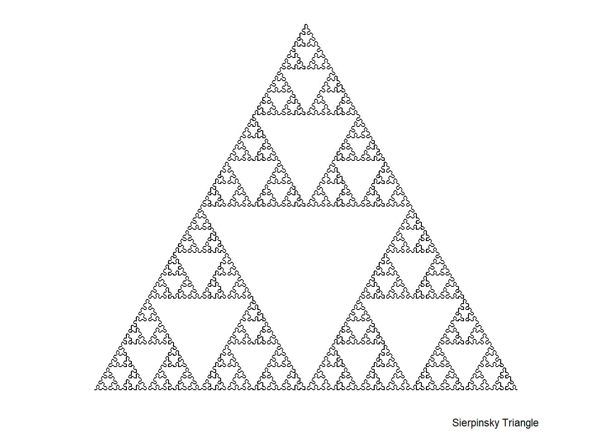

| w | a | b | c | d | e | f | p | Portion |
|---|---|---|---|---|---|---|---|---|
| f1 | 0.00 | 0.00 | 0.00 | 0.16 | 0 | 0.00 | 0.01 | Stem |
| f2 | 0.85 | 0.04 | -0.04 | 0.85 | 0 | 1.60 | 0.85 | Smaller leaflets |
| f3 | 0.20 | -0.26 | 0.23 | 0.22 | 0 | 1.60 | 0.07 | Largest left-hand leaflet |
| f4 | -0.15 | 0.28 | 0.26 | 0.24 | 0 | 0.44 | 0.07 | Largest right-hand leaflet |
Fractals
Barnsley Fern
From Wikipedia: The Barnsley fern is a fractal named after the British mathematician Michael Barnsley who first described it in his book Fractals Everywhere. The fern is a basic example of self-similar sets, a mathematical pattern that can be reproduced at any magnification and is also an example of an Iterated Function System.
The fern uses four affine transformations, the formula for which is:
\[ f_w(x,y)=\left[\begin{array}{cc} a & b \\ c & d \end{array} \right] \left[\begin{array}{c} x \\ y \end{array}\right] + \left[\begin{array}{c} e \\ f \end{array}\right] \]
By varying the parameters \(a, b, c, d, e, f\), the shape of the fern can be modified along with a parameter \(p\) that determines the probability of each transformation. For the fern here, the following parameters were used:
To plot 10,000 iterations were run and ggplot2::geom_bin_2d was used to bin the results and color the resulting simulation.
Code
library(ggplot2)
# Setup initial parameters
maxiter <- 10000
n <- 0
x <- 0
y <- 0
# Create empty dataframe
data <- data.frame(x = rep(NA, maxiter), y = rep(NA, maxiter))
# Run n times up to maxiter and probabilistically select which of the four affine transformations is applied.
while (n < maxiter) {
r <- runif(1, 0, 1)
if (r < 0.01) {
xn <- 0.0
yn <- 0.16 * y
} else if (r < .86) {
xn <- 0.85*x + 0.04*y
yn <- -0.04*x + 0.85*y + 1.6
} else if (r < 0.93) {
xn <- 0.2*x - 0.2*y
yn <- 0.23*x + 0.22*y + 1.6
} else {
xn <- -0.15*x + 0.28*y
yn <- 0.26*x + 0.24*y + 0.44
}
x <- xn
y <- yn
data[n+1,] <- c(x,y)
n <- n+1
}
ggplot(data, aes(x, y)) +
# bind_2d allows coloring according to which points are more
# frequently visited.
geom_bin_2d(bins = 300,
aes(fill = after_stat(log(density))),
show.legend = FALSE) +
scale_fill_gradientn(colors = c("green", "darkgreen")) +
lims(x = c(-3,3), y = c(-.5, 10)) +
coord_equal() + # 1:1 ratio
theme_void() # no axisWarning: Removed 10 rows containing missing values (`geom_tile()`).Binary Tree
An easy fractal to generate, the binary tree (or fractal canopy) is generated by: taking a line segment in as a matrix (first column x-coordinates, second y-coordinates), splits the end at plus and minus an angle, and grows a new branch r*length of the original branch.
I decided to explore this with both built in functionality and by creating a new class BinaryBranch and BinaryTree that keep information about the generation with the line segment as a new class. BinaryTree has an accompanying method to plot it.
Testing out class system
I defined two new classes: BinaryBranch stores the coordinates of the branch, generation of the branch, and the size of the tree while BinaryTree stores the entire tree as a list of branches.
I then defined a print method for the BinaryTree object that sets a color palette, finds the limits of the tree, creates a new plot, and plots the trunk and branches.
Code
# Create binarybranch class with slots coords for the point, generation for which generation the branch was generated from, and max_gen to keep information on how many branch generations there are.
setClass("BinaryBranch", slots = list(coords = "matrix", generation = "numeric", max_gen = "numeric"))
# A class that is a list of branches. Custom method of plot is created for this class.
setClass("BinaryTree", slots = list(branches = "list"))
# Custom print method for BinaryTree that plots each branch
setMethod("plot", "BinaryTree", function(x) {
pal <- colorRampPalette(colors = c("brown", "green"))
clrs <- pal(x@branches[[1]]@max_gen)
xlim <- c(0,0)
ylim <- c(0,0)
for (i in 1:length(x@branches)) {
xmax <- max(x@branches[[i]]@coords[,1])
ymax <- max(x@branches[[i]]@coords[,2])
xmin <- min(x@branches[[i]]@coords[,1])
ymin <- min(x@branches[[i]]@coords[,2])
if (xmax > xlim[2]) {
xlim[2] <- xmax
}
if (ymax > ylim[2]) {
ylim[2] <- ymax
}
if (xmin < xlim[1]) {
xlim[1] <- xmin
}
if (ymin < ylim[1]) {
ylim[1] <- ymin
}
}
# No margins
par(mar = c(0,0,0,0))
# Plot trunk
plot(x@branches[[1]]@coords, type = "l",
xlim = xlim, ylim = ylim,
lwd = 1 + x@branches[[1]]@max_gen,
lend = 2,
asp = 1, col = clrs[1],
axes = FALSE, ann = FALSE)
for (i in 2:length(x@branches)) {
lines(x@branches[[i]]@coords, col = clrs[x@branches[[i]]@generation],
lwd = x@branches[[i]]@max_gen / x@branches[[i]]@generation,
lend = 2)
}
})Creating a tree with base R
In this section, I wanted to explore creating a tree with base R by creating a series of helper functions.
First, the branch function takes a line segment, scale factor, and rotation amount and creates two new branches at plus and minus the rotation before outputting them as a list. Secondly, the make_tree function takes the trunk, number of generations, and same r and t and builds a tree with the specified number of generations from the trunk. This function also takes care of plotting the tree.
Code
# Initial stem
s1 <- matrix(c(0,0,0,1), nrow = 2)
r <- .9
t <- pi/6
# create branch with parameters of m = matrix, r = length ratio for next branch, and t = rotation amount.
branch <- function(m, r, t) {
ipt0 <- t(m[1,,drop = FALSE])
ept0 <- t(m[2,,drop = FALSE])
rotpos <- matrix(c(cos(t), sin(t), -sin(t), cos(t)), nrow = 2, byrow = TRUE)
rotneg <- matrix(c(cos(-t), sin(-t), -sin(-t), cos(-t)), nrow = 2, byrow = TRUE)
eptpos <- r*rotpos %*% (ept0 - ipt0) + ept0
eptneg <- r*rotneg %*% (ept0 - ipt0) + ept0
list(rbind(t(ept0), t(eptpos)),rbind(t(ept0), t(eptneg)))
}
# helper to create tree with starting trunk, number of generations of branches, branch ratio, and rotation amount
make_tree <- function(trunk, generations, r, t) {
pal <- colorRampPalette(colors = c("brown", "green"))
clrs <- pal(generations)
branch_test <- list(trunk)
ys <- sum(r^c(0:generations))
if (t > pi/2) {
xlim <- c(-1.2, 1.2)
ylim <- c(-.5, 1.2)
} else {
xlim <- c(-4, 4)
ylim <- c(-.25*ys, ys)
}
plot(trunk, type = "l", xlim = xlim, ylim = ylim,
asp = 1, col = clrs[1], lwd = 5)
n <- 1
k <- 1
for (j in 1:generations){
for (i in k:length(branch_test)) {
invisible(lapply(branch(branch_test[[i]], r, t), lines,
col = clrs[j],
lwd = 4/j))
branch_test <- c(branch_test, branch(branch_test[[i]], r, t))
n <- n + 1
}
k <- n
}
}
make_tree(s1, 10, .8, pi/4)Creating a tree with custom class
This starts off by creating a BinaryBranch from the same trunk. The branch function was rewritten as branchS4 to accept an object of BinaryBranch with the same functionality but it outputs a list of two new BinaryBranch objects.
Next, the make_treesS4 function was adapted from make_tree function to accept the list of BinaryBranches and create the whole tree. The tree is returned with class BinaryTree which I created the custom plot method for earlier, allowing plot to be directly called on the output of make_treeS4.
Code
# convert trunk from base R version to the "BinaryBranch" class created above.
s1S4 <- new("BinaryBranch", coords = s1, generation = 1)
# Edit of "branch" help function to accept "BinaryBranch" input
branchS4 <- function(m, r, t, g, max_gen) {
ipt0 <- t(m@coords[1,,drop = FALSE])
ept0 <- t(m@coords[2,,drop = FALSE])
rotpos <- matrix(c(cos(t), sin(t), -sin(t), cos(t)), nrow = 2, byrow = TRUE)
rotneg <- matrix(c(cos(-t), sin(-t), -sin(-t), cos(-t)), nrow = 2, byrow = TRUE)
eptpos <- r*rotpos %*% (ept0 - ipt0) + ept0
eptneg <- r*rotneg %*% (ept0 - ipt0) + ept0
lbranch <- new("BinaryBranch", coords = rbind(t(ept0), t(eptneg)), generation = g, max_gen = max_gen)
rbranch <- new("BinaryBranch", coords = rbind(t(ept0), t(eptpos)), generation = g, max_gen = max_gen)
list(lbranch, rbranch)
}
# Similar S4 class version of "make_tree" function that returns a tree of class "BinaryTree"
make_treeS4 <- function(trunk, generations, r, t) {
pal <- colorRampPalette(colors = c("brown", "green"))
clrs <- pal(generations)
trunk@max_gen <- generations+1
built_tree <- list(trunk)
ys <- sum(r^c(0:generations))
n <- 1
k <- 1
for (j in 1:generations){
for (i in k:length(built_tree)) {
new_branch <- branchS4(built_tree[[i]], r, t, j+1, generations+1)
built_tree <- c(built_tree, new_branch)
n <- n + 1
}
k <- n
}
new("BinaryTree", branches = built_tree)
}
# Use custom plot function on a S4 BinaryTree
plot(make_treeS4(s1S4, 12, r, pi/12))Levy C curve
The Levy C curve can be generated with an IFS as implemented here or with an L-system method that will be explored in a further set of fractal simulations. In this fractal, each line segment (pair of points) is iteratively replaced with a 45 degree turn left, then 90 right along with a scaling of \(1/\sqrt{2}\)
Code
x0 <- c(0,1)
y0 <- c(0,0)
iterations <- 15
rot45 <- 1/sqrt(2)*matrix(c(cos(pi/4), sin(pi/4), -sin(pi/4), cos(pi/4)), nrow = 2)
for (j in 1:iterations) {
for (i in length(x0):2){
newpt <- rot45 %*% matrix(c(x0[i] - x0[i-1], y0[i] - y0[i-1]),
nrow = 2) +
matrix(c(x0[i-1],y0[i-1]), nrow = 2)
x0 <- append(x0, newpt[1,],after = i-1)
y0 <- append(y0, newpt[2,],after = i-1)
}
}
plot(x0, y0, type = "l", asp = 1)L-System
From Wikipedia: an l-system consists of an alphabet of symbols that can be used to make strings, a set of production rules that expand each symbol into a larger string of symbols, an initial axiom string, and a mechanism for translating the strings into geometric structures. They describe the behavior of plant cells and model growth processes of plant development.
Here Ive created a basic L-system process that takes a given curve that is a list of an axiom, rules, angle, generations, and initial angle and generates the whole string that is then plotted. The two here have four symbols: L, R, +, and -.
- L: Go foward 1 unit
- R: Go forward 1 unit
- +: turn right by angle, dont move from point
- -: turn left by angle, dont move from point
Code
library(stringi)
library(ggplot2)
library(gsubfn)Loading required package: protoCode
curve1 <- list(name = "Koch Island",
axiom = "F-F-F-F",
rules = list("F" = "F-F+F+FF-F-F+F"),
angle = 90,
n = 4,
alpha0 = 90)
curve2 <- list(name = "Sierpinsky Triangle",
axiom = "R",
rules = list("L" = "R+L+R", "R" = "L-R-L"),
angle = 60,
n = 8,
alpha0 = 0)
draw_l_curve <- function(curve) {
rules <- curve$rules; alpha0 <- curve$alpha0; iterations <- curve$n
axiom <- curve$axiom
for (i in 1:iterations) axiom <- gsubfn(".", replacement = rules, axiom)
actions <- stri_extract_all(axiom, regex = ".")[[1]]
points <- data.frame(x = 0, y = 0, alpha = alpha0)
for (i in 1:length(actions)) {
if (actions[i] == "F" | actions[i] == "L" | actions[i] == "R") {
x <- points[nrow(points), "x"] + cos(points[nrow(points), "alpha"]*(pi/180))
y <- points[nrow(points), "y"] + sin(points[nrow(points), "alpha"]*(pi/180))
alpha <- points[nrow(points), "alpha"]
points <- rbind(points, data.frame(x=x, y = y, alpha = alpha))
} else {
alpha <- points[nrow(points), "alpha"]
points[nrow(points), "alpha"] <- eval(parse(text = paste0(alpha, actions[i], curve$angle)))
}
}
ggplot(data = points, aes(x,y)) +
geom_path() +
coord_fixed() +
theme(legend.position = "none",
panel.background = element_rect(fill = "white"),
panel.grid = element_blank(),
axis.ticks = element_blank(),
axis.title = element_blank(),
axis.text = element_blank()) +
labs(caption = curve$name)
}
draw_l_curve(curve1); draw_l_curve(curve2)